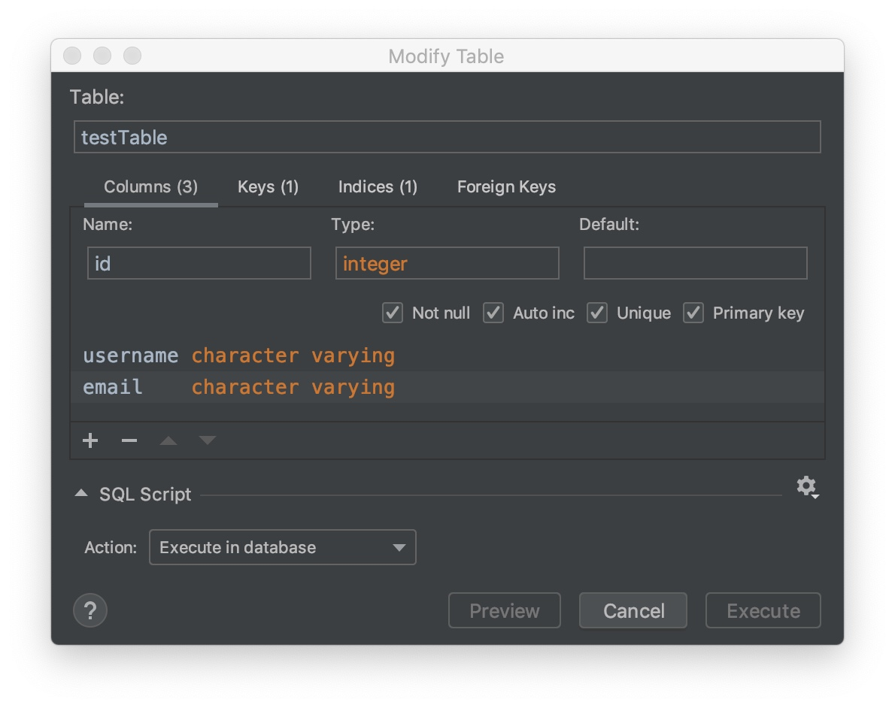

1. interpreter
• flask-sqlalchemy
• flak-sqlacodegen
• flask-admin #나중에 admin page에서 데이터를 넣고 뺄 수 있도록
2. db생성
원래 있는 db
flask-sqlacodegen "sqlite:///final_Hydrogen.db" --flask > models.py
from flask import Flask
from flask_sqlalchemy import SQLAlchemy
from flask_admin import Admin
app = Flask(__name__)
app.config['SQLALCHEMY_DATABASE_URI'] = 'sqlite:///secondDB.db?check_same_thread=False'
app.config['SQLALCHEMY_TRACK_MODIFICATIONS'] = False
db = SQLAlchemy(app)
admin = Admin(app, name='Flask Test', template_mode='bootstrap3')
@app.before_first_request
def create_all():
db.create_all()
SQLite objects created in a thread can only be used in that same thread.
class User(db.Model):
id = db.Column(db.Integer, primary_key=True)
username = db.Column(db.String(80), unique=True, nullable=False)
email = db.Column(db.String(120), unique=True, nullable=False)
def __repr__(self):
return '<User %r>' % self.username
4. python console에서 db
(0) query
User.query.filter_by(username='peter').first()
User.query.filter_by(username='missing').first()
User.query.filter(User.email.endswith('@example.com')).all()
User.query.order_by(User.username).all()
Getting user by primary key:
>>> User.query.get(1)
cat_names = Category.query.with_entities(Category.category_name).all()
from app import db
from app import User
admin = User(username='admin', email='admin@example.com')
db.session.add(admin)
db.session.commit()
from app import db
from app import Parking
import pandas as pd
parkindgData = pd.read_csv("주차장.csv")
parkingData.to_sql("parking", con=db.engine, index=False, if_exists="append")
• 솔직히 구리고 느림. 그냥 쉬워서 쓸 뿐.
• if_exists 옵션 : ‘fail’, ‘replace’, ‘append’ (table이 존재하지 하지 않으면 새로 만들어주는데, 있을 경우의 옵션)
• index_label : db에서 index로 쓰일 column명.
• 사용시 주의사항
◦ file에 header가 있어야 함 (first row는 무시하라 이런 option 없음)
◦ file의 header와 db column명은 일치해야 함
◦ db에서 auto-increment, pk column을 만든 경우
◦ index_label = “column명” 하지 않으면, db의 pk col이 정확히 “index”여야 함
◦ index=False를 반드시 해줘야 함 (default : index=True)
◦ db에서 auto-increment가 아닌 pk 칼럼만 있는 경우
◦ 여전히 이유는 모르겠지만 index=False로 넣어야… (dup error뜸)
◦ index_label은 df의 index column명 붙이면 됨
(2) delete
from app import db
from app import Parking
db.session.query(Parking).delete()
db.session.commit()
class Parking(db.Model):
...
@app.route('/')
def hello_world():
data = Parking.query.all()
return render_template("index.html", data=data)
<body>
{% for item in data %}
{{ item.주차장명 }}
{{ item["주차장구분"]}}
{% endfor %}
</body>
id 가 없는 csv 파일을
id 가 autoincrement,
flask-sqlalchemy을 통해 자동으로 만들어진…
• engine을 접근 : db.engine
• session을 접근 : db.session

table r-click → Import Data from File